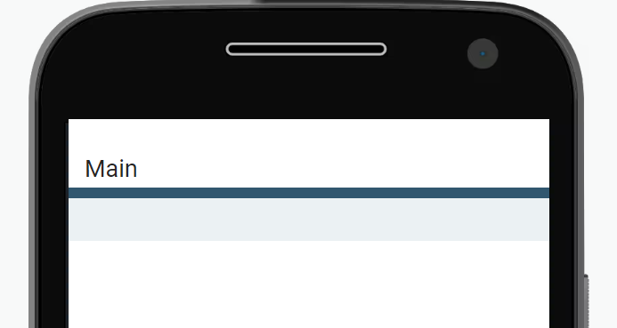
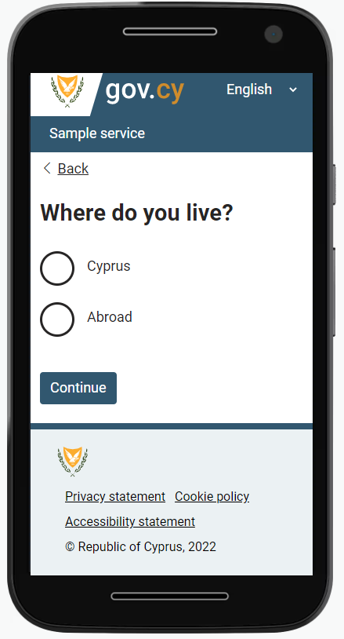

This is a older version. Check out the latest version of the design system.
How to create a page using the gov.cy design system
In this article we will be looking at a step by step guide for developers on how to create a simple question page using DSF’s reusable components.
When creating a new digital service for gov.cy, you can use our components for all your front-end needs. These components are consistent with the gov.cy design system and they can be easily implemented by anyone with basic front end development skills. They have been tested in different devices and browsers and improved based on user research findings.
Creating pages for gov.cy has never been easier. You can use our pre-built css and javascript to create an HTML page with the necessary head and body sections and use one of the predefined layouts. All you need to do is copy the code below and follow the instructions:
1. Download all the static assets
First things first, you will need to download all the static files needed from our design system:
In the examples used in this article and in our design system, the css and the images are organised in separate sub-folders, /css and /img respectively.
2. Create a web app manifest file
The web app manifest provides information about your service such as its name, icons, background and theme colour, in a JSON text file.
Create a manifest.json text file and add the following content.
{
"short_name": "Sample service",
"name": "Sample service - gov.cy",
"icons": [
{
"src": "/img/icons-128.png",
"type": "image/png",
"sizes": "128x128"
},
{
"src": "/img/icons-192.png",
"type": "image/png",
"sizes": "192x192"
},
{
"src": "/img/icons-512.png",
"type": "image/png",
"sizes": "512x512"
}
],
"start_url": ".",
"background_color": "#31576F",
"display": "browser",
"scope": "/",
"theme_color": "#31576F"
}In a real service make sure to replace the following with your service details:
short_name: “Sample service”,name: “Sample service - gov.cy”,
3. Create an html file
Create an html file and add the necessary head and body sections. Then inside the <body> add the section described in the page template page of our design system.
In our example we have created a file named index.html.All this code needs to be kept together in our file. At this point the file’s content looks like this:
<!doctype html>
<html lang="el">
<head>
<!-- Required meta tags -->
<meta charset="utf-8">
<meta name="viewport" content="width=device-width, initial-scale=1">
<!-- Social -->
<meta property="og:description" content="This is an example of a sample question page for a gov.cy service ">
<meta property="og:title" content="Where do you live? - Sample service - gov.cy">
<meta property="og:url" content="https://SERVICE_URL">
<meta property="og:type" content="website">
<meta property="og:image" content="/img/icons-512.png">
<meta property="og:site_name" content="GOV.CY">
<meta property="twitter:card" content="summary_large_image">
<meta property="twitter:url" content="https://SERVICE_URL">
<meta property="twitter:title" content="Where do you live? - Sample service - gov.cy">
<meta property="twitter:description" content="This is an example of a sample question page for a gov.cy service ">
<meta property="twitter:image" content="/img/icons-512.png">
<!-- Theme -->
<link rel="manifest" href="/manifest.json">
<meta name="theme-color" content="#31576F">
<link rel="icon" type="image/png" sizes="48x48" href="img/favicon-48x48.png">
<link rel="icon" type="image/png" sizes="32x32" href="img/favicon-32x32.png">
<link rel="icon" type="image/png" sizes="16x16" href="img/favicon-16x16.png">
<link rel="apple-touch-icon-precomposed" sizes="144x144" href="img/apple-touch-icon-144x144-precomposed.png">
<link rel="apple-touch-icon-precomposed" sizes="120x120" href="img/apple-touch-icon-120x120-precomposed.png">
<link rel="apple-touch-icon-precomposed" sizes="114x114" href="img/apple-touch-icon-114x114-precomposed.png">
<link rel="apple-touch-icon-precomposed" sizes="72x72" href="img/apple-touch-icon-72x72-precomposed.png">
<link rel="apple-touch-icon-precomposed" href="img/apple-touch-icon-57x57-precomposed.png">
<!-- CSS -->
<link href="css/main.min.css" rel="stylesheet" >
<title>Where do you live? - Sample service - gov.cy</title>
<meta name="description" content="This is an example of a sample question page for a gov.cy service ">
</head>
<body>
<a href="#mainContainer" class="govcy-skip-link">Skip to main content</a>
<!--bodyStart-->
<section class="govcy-container-fluid" id="bodyStartContainer"> </section>
<!--Header-->
<section class="govcy-container-fluid govcy-p-0 govcy-m-0 govcy-position-relative govcy-d-print-none">
<div class="govcy-container" id="headerContainer"></div>
</section>
<!--beforeMain-->
<section class="govcy-container govcy-mb-4" id="beforeMainContainer"> </section>
<!--main-->
<main class="govcy-container" id="mainContainer"> </main>
<!-- Footer -->
<section class="govcy-container-fluid govcy-br-top-8 govcy-br-top-primary govcy-p-3 govcy-bg-light govcy-d-print-none">
<div class="govcy-container" id="footerContainer"></div>
</section>
<!--bodyEnd-->
<section class="govcy-container-fluid" id="bodyEndContainer"> </section>
<!-- Option 1: Bootstrap Bundle with Popper -->
<script src="https://cdn.jsdelivr.net/npm/bootstrap@5.1.3/dist/js/bootstrap.bundle.min.js" integrity="sha384-ka7Sk0Gln4gmtz2MlQnikT1wXgYsOg+OMhuP+IlRH9sENBO0LRn5q+8nbTov4+1p" crossorigin="anonymous"></script>
</body>
</html>In a real service make sure to replace the following with your service details:
- Update the content of the following tags with your service URL start page
<meta property="og:url" content="https://SERVICE_URL"><meta property="twitter:url" content="https://SERVICE_URL">
- Update the content of the following tags with your page title
<meta property="og:title" content="Where do you live? - Sample service - gov.cy"><meta property="twitter:title" content="Where do you live? - Sample service - gov.cy"><title>Where do you live? - Sample service - gov.cy</title>
- Update content the content of the following tags with your service description
<meta property="og:description" content="This is an example of a sample question page for a gov.cy service "><meta property="twitter:description" content="This is an example of a sample question page for a gov.cy service "><meta name="description" content="This is an example of a sample question page for a gov.cy service ">
Visually, the page looks like this right now:
It doesn’t look like much now but we’ll get there soon.
4. Add the desired layout
You can now add the desired layout in your html file, inside the <main> section. We recommend using the Two-Thirds layout unless your user research or testing shows you need a different layout.
This is what the <main> section looks like at this point:
<!--main-->
<main class="govcy-container" id="mainContainer">
<div class="row">
<article class="govcy-col-8">Main</article>
</div>
</main>Visually our page right now looks like this:

It still is not much to look at but be patient, we are getting there.
5. Add components and patterns
We can now add our design elements and include content in our page. First we will start with the basics, that is all the components most gov.cy pages should have.
Header
Add code to inside the header section of the body for a header component.
This is what the header section looks like now:
<!--Header-->
<section class="govcy-container-fluid govcy-p-0 govcy-m-0 govcy-position-relative govcy-d-print-none">
<div class="govcy-container" id="headerContainer">
<div class="row">
<header class="govcy-header govcy-bg-primary govcy-text-white govcy-bg-primary-right">
<a href="#" class="govcy-logo"> <img></a>
<form class="govcy-text-white govcy-bg-primary" novalidate>
<select name="govcy-lang-menu" class="govcy-lang-menu govcy-text-white">
<option value="English">English</option>
<option value="Greek">Ελληνικά</option>
</select>
</form>
<span class="govcy-service-name">Sample service</span>
</header>
</div>
</div>
</section>In a real service make sure to replace the service name and add functionality to change language.
Back link
Add code inside the before main section (<section id="before-main">) of the body for a back link.
This is what the before main section looks like now:
<!--beforeMain-->
<section class="govcy-container govcy-mb-4" id="beforeMainContainer">
<span class="bi bi-chevron-left"></span>
<a href="#" class="govcy-back-link">Back</a>
</section>In a real service make sure to add functionality to your back link.
Footer
Add code inside the footer section of the body for a footer component.
This is what the footer section looks like now:
<!-- Footer -->
<section class="govcy-container-fluid govcy-br-top-8 govcy-br-top-primary govcy-p-3 govcy-bg-light govcy-d-print-none">
<div class="govcy-container" id="footerContainer">
<div class="row">
<footer class="govcy-footer">
<span class="govcy-d-inline-block govcy-valign-top govcy-pb-2"><img alt="govcy-logo"></span>
<ul class="govcy-d-inline-block govcy-m-0 govcy-pl-3 govcy-efs-medium">
<li><a href="#">Privacy statement</a></li>
<li><a href="#">Cookie policy</a></li>
<li><a href="#">Accessibility statement</a></li>
<li class="govcy-d-block govcy-text-dark">© Republic of Cyprus, 2022</li>
</ul>
</footer>
</div>
</div>
</section>In a real service make sure to add real urls for all the links inside the footer.
Question page pattern
We can now use the question page pattern and add content in the <main> section to complete the page. We use the question page pattern when we are asking the user a question in the service.
This is what the main section looks like now:
<!--main-->
<main class="govcy-container" id="mainContainer">
<div class="row">
<article class="govcy-col-8">
<form action="" class="govcy-form" novalidate="">
<fieldset class="govcy-fieldset govcy-mb-4">
<legend><h1>Where do you live?</h1></legend>
<div class="govcy-form-control">
<label class="govcy-radio">Cyprus
<input class="govcy-radio-input" type="radio" name="radio">
<span class="govcy-radio-checked"></span>
</label>
<label class="govcy-radio">Abroad
<input class="govcy-radio-input" type="radio" name="radio">
<span class="govcy-radio-checked"></span>
</label>
</div>
</fieldset>
<button type="button" class="govcy-btn-primary govcy-mb-4">Continue</button>
</form>
</article>
</div>
</main>Notice that to create this question, we have used the following elements from the design system:
- an
<h1>heading - a radio component
- a button component
If you need an element that is not defined in the Design System library, there is an article outlining how to create new design elements using the gov.cy utility classes.
Finally our page visually looks like this now:

In a real service make sure to add functionality in the Continue button.
So there you have it. All the steps and code you need to start building pages for gov.cy. For more information you can find guidance documentation here:
Service Standard
DMRID blogs
Contact details for DSF
You can get all the files used in this example from our github repository. You can also take a look at the end result here.